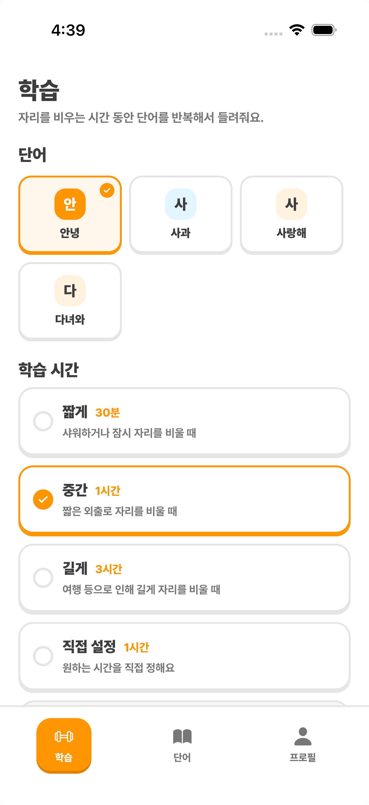
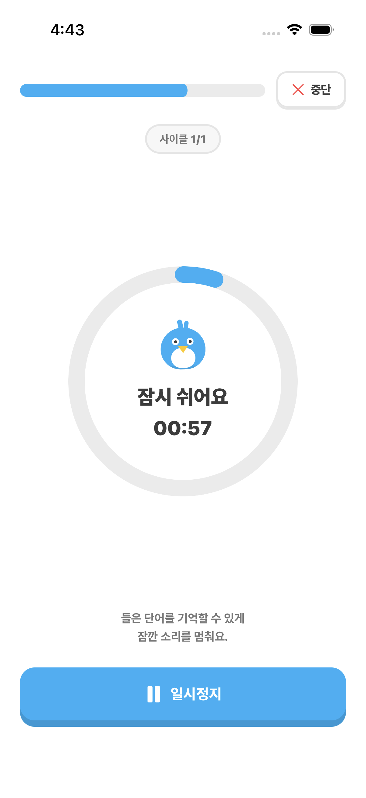
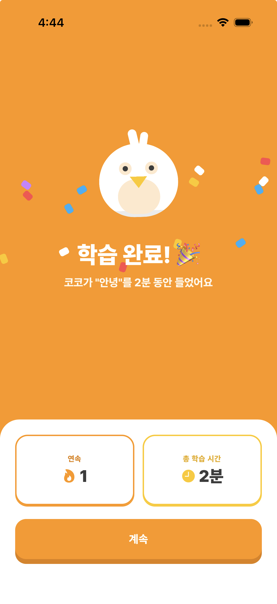
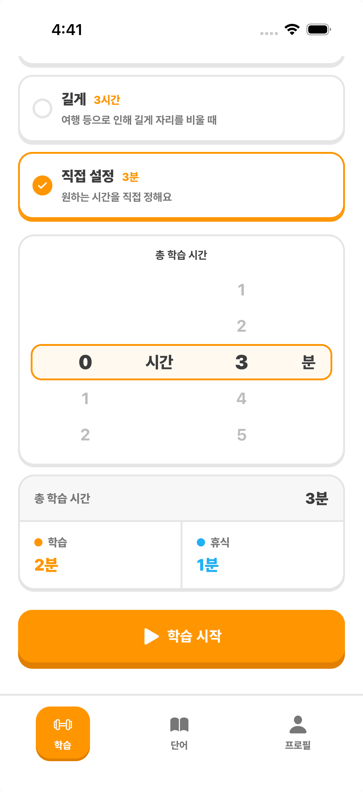
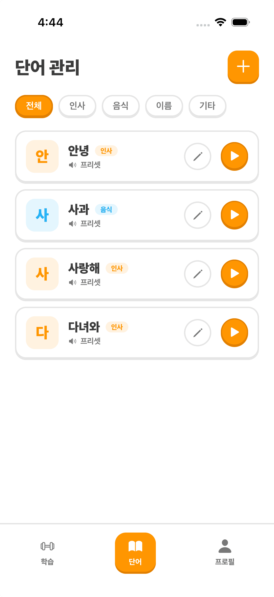
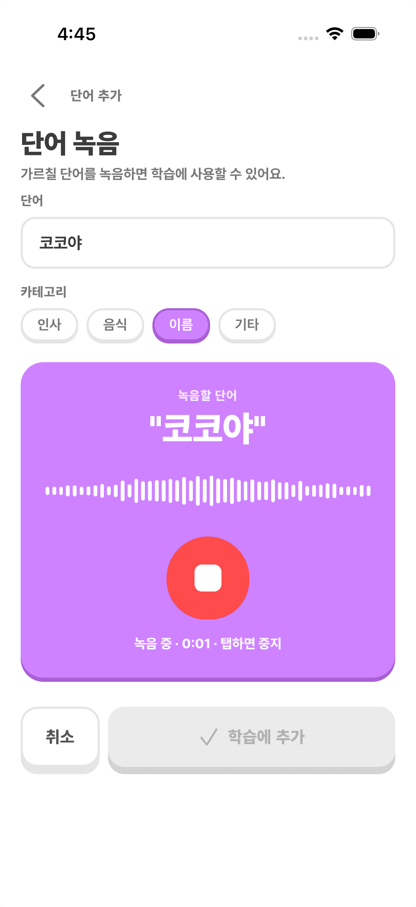

앵무새의 소리에 반응해 능동적으로 단어 학습을 이끌고, 그 결과를 데이터로 보여줍니다.

발음을 듣고 얼마나 비슷하게 따라 하는지 확인한 뒤, 잘 따라 하면 다음 단어로, 어려워하면 더 쉬운 단어로 알아서 맞춰줍니다.

보호자가 자리를 비워도 AI가 집사 대신 같은 단어를 반복해서 들려주고 따라 하게 해요. 잘 따라 하면 칭찬하고, 심심해하지 않도록 하루 종일 곁에서 말을 걸어줍니다.

어떤 단어를 몇 번 말했는지, 얼마나 잘 따라 했는지 녹음과 함께 보여줘요. 매일 늘어가는 단어 수를 한눈에 확인하고, 다른 앵무새들과 비교하거나 SNS에 자랑할 수도 있습니다.
마이크만으로 앵무새의 발성과 행동 소음을 수집합니다.
MFCC·DTW 알고리즘으로 발음 정확도를 측정하고 어떤 단어를 얼마나 잘 따라 했는지 분석합니다.
LLM이 다음 단어와 난이도를 추천하고 이해하기 쉬운 가이드를 만듭니다.
다음 학습을 자동으로 이어가고 학습 변화를 리포트로 전달합니다.
학습 세션, 단어 관리, 리포트까지 — 한 손에서 진행하는 앵무새 단어 학습



App Store와 Google Play에서 BuddyBird를 만나보세요.
코뉴어를 비롯해 종·나이·성별 등 개체 특성에 맞춘 커리큘럼을 제공합니다.
네, 가지고 계신 스마트폰만 있으면 됩니다. 앱을 설치하고 새장 근처에 두기만 하면 핸드폰 마이크로 앵무새의 소리를 듣고 단어 학습과 케어가 진행됩니다. 별도의 기기나 장비는 필요하지 않아요.
네. 보호자가 없어도 AI가 집사 대신 단어를 반복해서 들려주고 따라 하게 합니다. 마이크로 앵무새의 반응을 듣고, 잘 따라 하면 칭찬을, 어려워하면 더 쉬운 단어로 바꿔가며 혼자서도 학습을 이어갑니다.
월 구독으로 단어 학습 기능을 제공할 예정입니다. 구체적인 요금은 출시 시점에 안내드립니다.